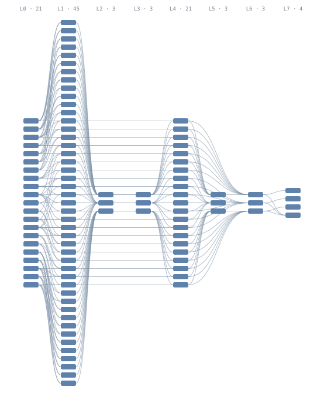
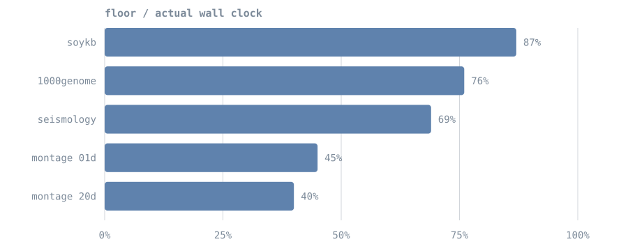
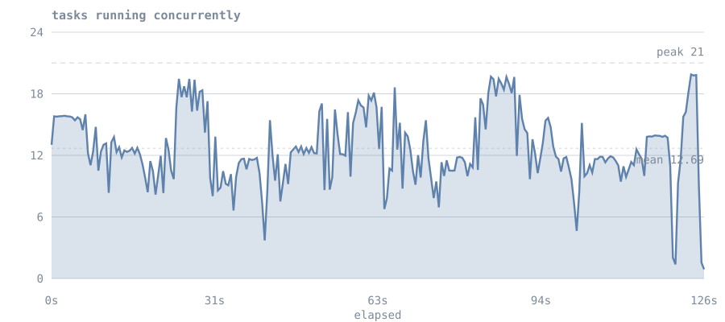
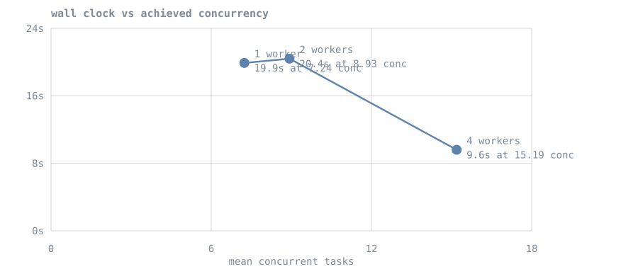

Validation & Benchmarks
Titan is validated against published workflow instances from WfCommons, not benchmarks written for it. These are DAGs recorded from real production scientific workflows (astronomy, genomics, seismology, agriculture), distributed in a documented schema called WfFormat.
The reason this matters: an instance carries its own ground truth. It states exactly which tasks exist and which depends on which, so "every task ran once" and "no child started before its parent finished" become checkable facts rather than claims. It also defines its own performance floors, so efficiency can be reported without comparing against another system.
Which environment these numbers come from
Everything on this page is a native single-host run: the Master, workers and TitanStore all on one 14-core machine. This environment is right for correctness and for the shape of overheads, and wrong for anything about fleet scaling or absolute throughput.
Multi-node cloud results are measured separately and reported on Multi-VM Cloud Setup. Where the two disagree, the cloud numbers are the ones to quote for capacity, and the numbers here are the ones to quote for correctness.
Correctness
The strongest result, and the one that does not depend on the hardware at all. For every parent-child edge in the real workflow, the child's span must start no earlier than the parent's span ends.
| Workflow | Tasks | Completed | Dependency edges verified | Order violations |
|---|---|---|---|---|
| montage 2mass-20d | 9,805 | 9,805 / 9,805 | 11,631 | 0 |
| seismology | 701 | 701 / 701 | 700 | 0 |
| soykb | 156 | 156 / 156 | 354 | 0 |
| montage 2mass-01d | 103 | 103 / 103 | 231 | 0 |
| 1000genome | 52 | 52 / 52 | 76 | 0 |
| total | 10,817 | 10,817 / 10,817 | 12,992 | 0 |
The largest instance published by WfCommons is montage 2mass-20d: 9,805 tasks, 24,027 edges, and a single level 6,285 tasks wide. It completes with every task run and no ordering violation.
Why 11,631 edges rather than 24,027
Edge verification reads recorded spans, and the Master keeps the most recent 5,000 in memory
(titan.metrics.spans.max). A 9,805-task run overflows that, so roughly half the edges were
checkable from the live ring. Raise the cap, or verify against the persisted span files, to
check all of them.
Causal ordering is a property of the scheduler, not of the machine, so this table transfers to any deployment.
Shapes covered
Topology is deliberately varied, because a scheduler can be correct on one shape and broken on another.
| Workflow | Tasks | Depth | Widest level | Character |
|---|---|---|---|---|
| montage 2mass-20d | 9,805 | 8 | 6,285 | the largest instance published |
| seismology | 701 | 2 | 700 | flat and extremely wide |
| soykb | 156 | 11 | 100 | deep and dependency-bound |
| montage 2mass-01d | 103 | 8 | 45 | densest edges per node |
| 1000genome | 52 | 3 | 28 | small and shallow |
What one of these actually looks like
The smallest Montage instance, drawn to scale. Each block is a task, each curve a dependency, and each column a level of the graph. This is the 103-task variant; the 9,805-task one has the same shape with levels up to 6,285 wide, which is why the larger instances are described in numbers rather than pictures.

Any pipeline's graph can be exported from the DAG Visualizer as SVG, Mermaid or
Graphviz DOT. Mermaid suits graphs under a few hundred nodes and pastes into
mermaid.live or a Markdown fence; DOT is the one that scales to thousands via
dot -Tsvg or sfdp.
A bug this found
The seismology instance, 700 independent roots feeding one sink, exposed a silent, permanent
dependency-loss bug. The sink never ran: it sat blocked reporting 654/700 parents done while
all 700 parents were COMPLETED in the store. No error, no retry, no log line.
Completion notification was purely edge-triggered, and a DAG's jobs are admitted one at a time. So the roots began executing while the sink was still being registered, and every completion landing in that window was delivered to a child that did not exist yet. Nothing reconciled afterwards.
Every existing test used narrow DAGs, where admission finishes long before any task can complete, so the window never opened. The fix makes admission look backwards at parents that already finished. Verified on the shape that exposed it (701/701) and on a 6,285-wide level (9,805/9,805).
Full postmortem: docs/BUGFIX_DAG_DEPENDENCY_LOSS.md.
Corrected semantics: Execution Flows.
Performance
Read the environment note before quoting these
Single host: Master, workers and the store share 14 cores. Task durations are replayed from each instance's recorded runtimes rather than being the original computation.
Each instance defines its own floor. The critical path is the wall time with infinite slots; total work divided by slot count is the wall time with no dependencies at all. The larger of the two is the best any scheduler could achieve on that fleet.
| Workflow | Wall clock | Floor | Efficiency | Achieved speed-up |
|---|---|---|---|---|
| montage 2mass-20d (9,805 tasks) | 125.9 s | 49.7 s | 40% | 12.7 of 20 slots busy on average |
| soykb | 18.2 s | 15.9 s | 87% | 2.7x of 3.1x possible |
| 1000genome | 13.4 s | 10.2 s | 76% | 10.3x of 13.5x |
| seismology | 26.1 s | 18.1 s | 69% | 13.9x of 72.1x |
| montage | 47.2 s | 21.1 s | 45% | 7.7x of 17.2x |

The deeper and narrower a workflow, the closer Titan runs to its floor: soykb spends its time on a genuine critical path rather than on scheduling. Seismology's 72x theoretical maximum is unreachable on 20 slots by definition; against the achievable floor it reaches 69%.
The 9,805-task run scores lowest, at 40%, and that number is the interesting one. It held a mean of 12.7 of 20 slots busy with a peak of 21, so the fleet was never idle for long, yet the run still took 125.9 s against a 49.7 s floor. With ~114 ms median task duration the per-task worker overhead is a large fraction of each task, and 9,805 of them is where that accumulates. This is a worker result, not a scheduler one.
Where a run's wall clock actually goes
Efficiency is a single number and cannot say why a run was slow. Occupancy over time can: it shows how many tasks were executing at each moment, so a fleet starved by dependencies looks different from a fleet that was busy the whole time.

That splits the wall clock into causes:
| 47.4 s | the work itself, spread across 21 slots |
| +28.7 s | per-task overhead — 603 s of slot time over 9,809 tasks, 62 ms each |
| +49.8 s | fleet not staying full — mean 12.7 against peak 21 |
| 125.9 s | total |
So the largest single loss is not overhead, it is the fleet not remaining saturated. Generate this
for any run with python titan_test_suite/wf_occupancy.py <run-fragment> --intended <seconds>.
Does adding slots help
Measured, on one workflow at three fleet sizes:

| Workers | Configured slots | Observed peak | Mean concurrency | Wall |
|---|---|---|---|---|
| 1 | 4 | 9 | 7.24 | 19.9 s |
| 2 | 12 | 15 | 8.93 | 20.4 s |
| 4 | 16 | 16 | 15.19 | 9.6 s |
Wall clock tracks achieved concurrency, not configured slots. Going from one worker to two barely moved either (7.24 to 8.93) and the wall clock did not improve; reaching 15.19 halved it. Total slot-seconds stay roughly constant at 144 to 182 across all three, which is the consistency check that the model holds.
This sweep is confounded
Titan's autoscaler adds workers whenever demand exceeds capacity, and it did so in every arm: the "1 worker" run reached 9 concurrent tasks. The numbers describe achieved concurrency, not a controlled slot count. A clean sweep needs a way to pin the fleet, which Titan does not currently expose.
Overhead, separated
A single throughput figure cannot distinguish "the scheduler is slow" from "process spawn is slow", so the two are measured apart.
| Overhead | p50 | What it is |
|---|---|---|
| Per-task, worker side | 47 – 103 ms | process spawn plus protocol. Stable across every shape, because it does not depend on the graph. |
| Dependency release, uncontended | 3 ms | parent's completion to child's start, measured when slots were free. |
Dependency release is only meaningful below saturation
That metric measures parent-ends to child-starts, which includes waiting for a free slot. Montage records a p50 of 8,057 ms, but its levels are 45 tasks wide on 20 slots, so children genuinely queue. That figure is slot contention, not scheduler latency. Only the uncontended measurement describes the scheduler.
Engine footprint
Measured on the same host, with the cluster idle after the runs above.
| Master | Worker | |
|---|---|---|
| Resident memory | 340 MB (live heap 97 MB) | 40 MB |
| Threads | 39 | 36 |
| Classes loaded | 1,556 | — |
| Cold start to accepting connections | 62 ms (median 116 ms of 3) | — |
| Artifact | |
|---|---|
| Distributable JAR | 131 KB, 47 classes |
| Runtime dependencies outside the JDK | none |
The Master's resident figure is dominated by the JVM's default heap reservation on a large host
(-XX:InitialHeapSize was 576 MB here); the live heap is 97 MB while holding 5,000 spans and the
full execution history. Set -Xmx to size it for the deployment.
On the zero-dependency claim
gson is declared in pom.xml but is not imported anywhere under src/main, and no
third-party classes are packaged in the JAR. The runtime is genuinely JDK-only; the stale
declaration should be removed so the claim is verifiable by inspection rather than by grep.
Reproducing this
Any WfFormat instance works. Instances are at github.com/wfcommons/WfInstances.
# fetch an instance
curl -sfL -o montage.json \
https://raw.githubusercontent.com/wfcommons/WfInstances/main/pegasus/montage/montage-chameleon-2mass-01d-001.json
# inspect its shape without touching the cluster
python titan_test_suite/wfformat_to_titan.py montage.json
# run it and derive correctness + performance
python titan_test_suite/wf_bench_runner.py montage.json --scale 0.2
Useful flags:
| Flag | Effect |
|---|---|
--scale F |
multiply recorded runtimes, to compress a multi-hour workflow |
--mode cpu |
burn CPU instead of sleeping, to exercise worker saturation |
--limit N |
keep N tasks, breadth-first from the roots, edges preserved |
--json |
machine-readable output for scripting |
The converter handles WfFormat 1.6 (workflow.specification plus workflow.execution) and the
older flat layouts, sanitises task IDs that would otherwise break Titan's pipe-delimited wire
format, and rejects cyclic instances rather than hanging on them.
What this does not test
Replaying an instance reproduces its task graph and timings, not its computation. Each task becomes a generated script that occupies a slot for the recorded duration. That makes this a genuine test of the scheduler, and not a test of data processing, file staging or I/O.
WfCommons also does not currently publish ML or agentic workflow instances, so Titan's agentic, HITL and MCP paths are covered by its own suites rather than by this corpus.